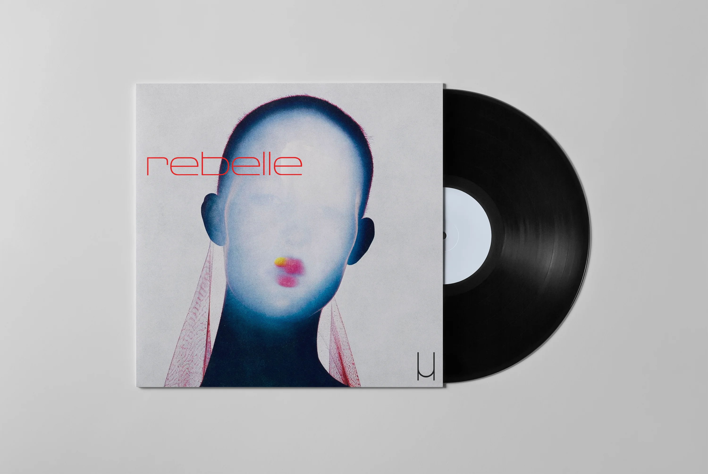
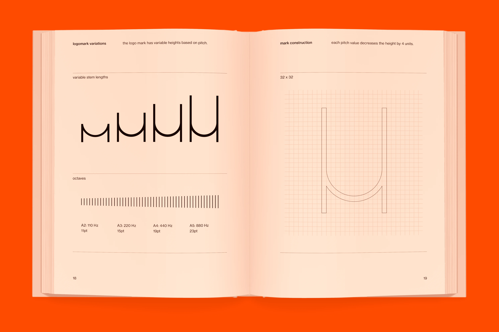
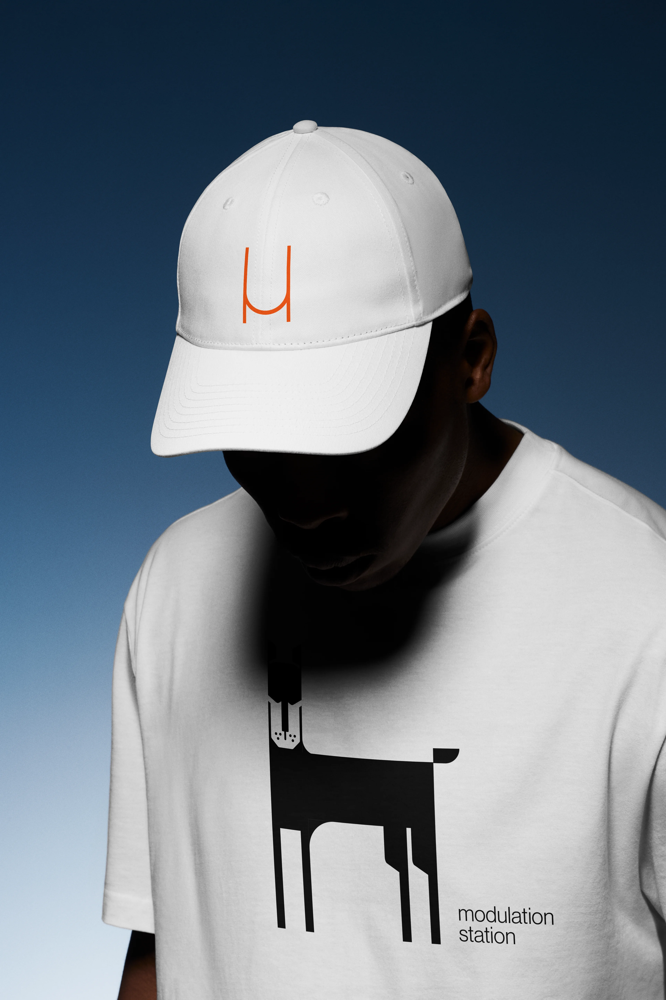
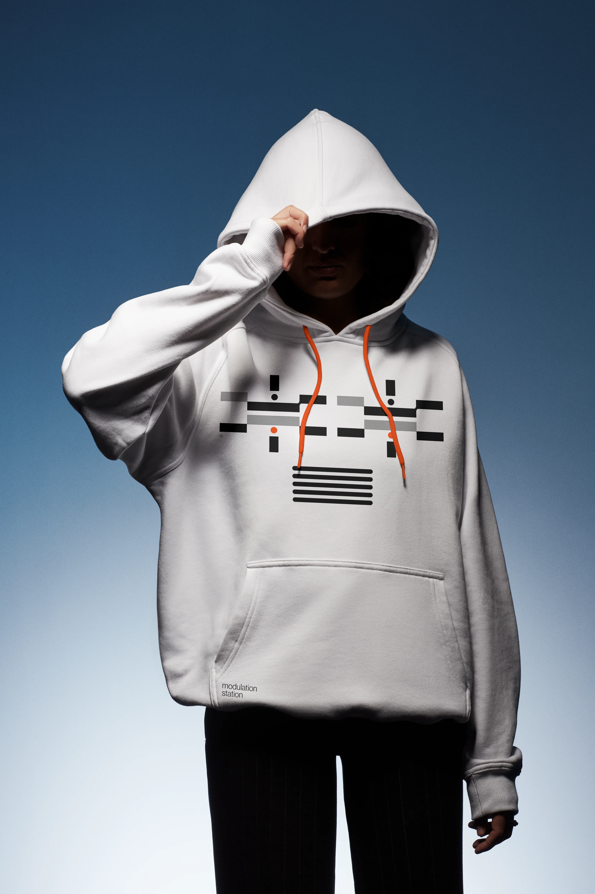

Modulation Station
Modulation Station is an electronic music artist who makes beats with a cinematic feel. His community is full of tech enthusiasts that care deeply about the technology behind music. To him and his audience, synthesis is just as much about experimentation and engineering as it is about expression.

Avoiding the cliché
From the outset, we established that he wanted the brand to feel luxurious, optimistic and sleek, which is a major departure from the stereotypical cyberpunk aesthetic associated with EDM culture.

Strategy
Modulation Station brings levity back to EDM with a deep appreciation for the technology that makes it possible. The identity needed to draw inspiration from the electronic synthesis process, while feeling sleek and modern.


Solution
The core idea behind the identity is an audio responsive, abstract M. There are also alternate letterforms based on the 4 primary sound waves used during the music synthesis process.



